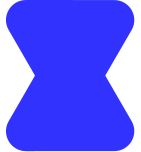

<nav class="nitrox-nav" aria-label="Main Navigation">
    <div class="nav-brand">
        <a href="./index.html" class="nav-logo-link" aria-label="nitrox home">
            
        </a>
        <a href="./index.html" class="nav-brand-text">nitrox</a>
    </div>
    <div class="nav-menu" id="nav-menu">
        <div class="nav-links">
            <a href="./index.html" class="nav-buttons">home</a>
            <a href="./projects.html" class="nav-buttons">projects</a>
            <a href="./community.html" class="nav-buttons">community</a>
            <a href="./about.html" class="nav-buttons">about</a>
            <a href="./bsod.html" class="nav-buttons nav-bsod">:3</a>
        </div>
    </div>
    <!-- Icons: Phosphor Icons (MIT) — desktop, moon, sun. Inlined so they render offline. -->
    <div class="nav-theme" role="group" aria-label="Color theme">
        <button class="theme-btn" type="button" data-theme-value="device" aria-label="Use device theme" title="Device theme" aria-pressed="true">
            <svg viewBox="0 0 256 256" aria-hidden="true" focusable="false"><path d="M208,40H48A24,24,0,0,0,24,64V176a24,24,0,0,0,24,24h72v16H96a8,8,0,0,0,0,16h64a8,8,0,0,0,0-16H136V200h72a24,24,0,0,0,24-24V64A24,24,0,0,0,208,40ZM48,56H208a8,8,0,0,1,8,8v80H40V64A8,8,0,0,1,48,56ZM208,184H48a8,8,0,0,1-8-8V160H216v16A8,8,0,0,1,208,184Z"/></svg>
        </button>
        <button class="theme-btn" type="button" data-theme-value="dark" aria-label="Use dark theme" title="Dark theme" aria-pressed="false">
            <svg viewBox="0 0 256 256" aria-hidden="true" focusable="false"><path d="M233.54,142.23a8,8,0,0,0-8-2,88.08,88.08,0,0,1-109.8-109.8,8,8,0,0,0-10-10,104.84,104.84,0,0,0-52.91,37A104,104,0,0,0,136,224a103.09,103.09,0,0,0,62.52-20.88,104.84,104.84,0,0,0,37-52.91A8,8,0,0,0,233.54,142.23ZM188.9,190.34A88,88,0,0,1,65.66,67.11a89,89,0,0,1,31.4-26A106,106,0,0,0,96,56,104.11,104.11,0,0,0,200,160a106,106,0,0,0,14.92-1.06A89,89,0,0,1,188.9,190.34Z"/></svg>
        </button>
        <button class="theme-btn" type="button" data-theme-value="light" aria-label="Use light theme" title="Light theme" aria-pressed="false">
            <svg viewBox="0 0 256 256" aria-hidden="true" focusable="false"><path d="M120,40V16a8,8,0,0,1,16,0V40a8,8,0,0,1-16,0Zm72,88a64,64,0,1,1-64-64A64.07,64.07,0,0,1,192,128Zm-16,0a48,48,0,1,0-48,48A48.05,48.05,0,0,0,176,128ZM58.34,69.66A8,8,0,0,0,69.66,58.34l-16-16A8,8,0,0,0,42.34,53.66Zm0,116.68-16,16a8,8,0,0,0,11.32,11.32l16-16a8,8,0,0,0-11.32-11.32ZM192,72a8,8,0,0,0,5.66-2.34l16-16a8,8,0,0,0-11.32-11.32l-16,16A8,8,0,0,0,192,72Zm5.66,114.34a8,8,0,0,0-11.32,11.32l16,16a8,8,0,0,0,11.32-11.32ZM48,128a8,8,0,0,0-8-8H16a8,8,0,0,0,0,16H40A8,8,0,0,0,48,128Zm80,80a8,8,0,0,0-8,8v24a8,8,0,0,0,16,0V216A8,8,0,0,0,128,208Zm112-88H216a8,8,0,0,0,0,16h24a8,8,0,0,0,0-16Z"/></svg>
        </button>
    </div>
    <button class="nav-toggle" type="button" aria-expanded="false" aria-controls="nav-menu" aria-label="Open menu">
        <span class="nav-toggle-line"></span>
        <span class="nav-toggle-line"></span>
        <span class="nav-toggle-line"></span>
    </button>
</nav>
